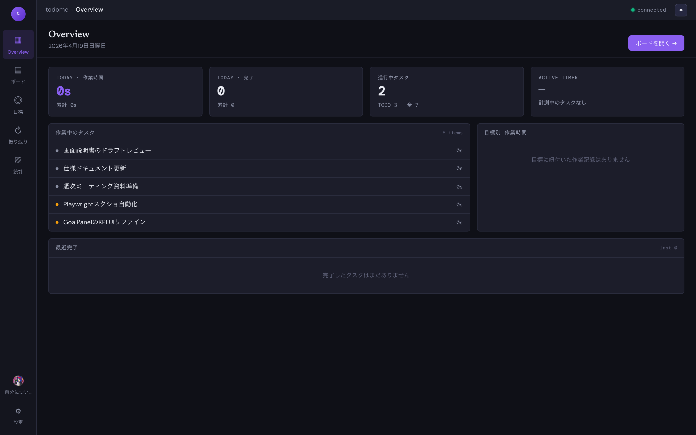
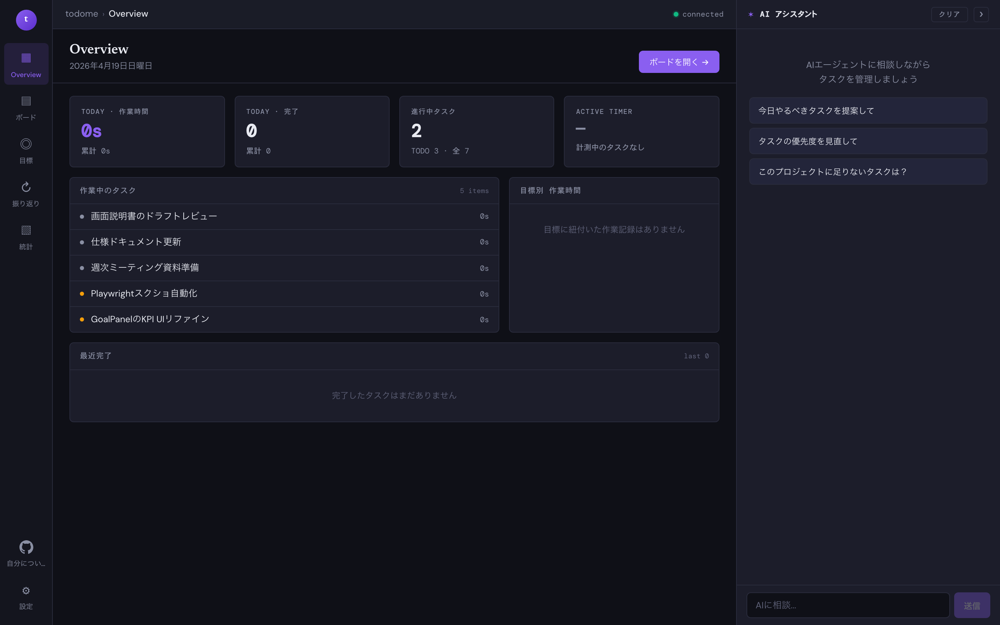

Overview (ダッシュボード)
アプリ起動時に最初に表示されるダッシュボード画面です。 今日の作業時間・進行中タスク・完了履歴・目標別の作業時間を一目で確認できます。

画面の見方
| トップ 4 タイル | 作業時間・完了数・進行中タスク・Active Timer を表示。 累計と今日の値を並べて表示し、生産性の「いま」を俯瞰できます。 |
|---|---|
| 作業中のタスク | ステータスが「進行中」のタスクのリスト。クリックで詳細モーダルが開きます。 |
| 目標別 作業時間 | 各タスクに紐付けた目標ごとの累積作業時間を表示。どの目標に時間を使えているか分かります。 |
| 最近完了 | 完了に移動した最新タスクのリスト。振り返りの材料として使えます。 |
| ボードを開く ボタン | 右上のボタンから即座に「ボード」画面へ遷移できます。 |
AIアシスタントパネル
画面右側には常に AI アシスタントが配置されています。 初期状態ではおすすめのプロンプト候補（「今日やるべきタスクを提案して」等）が表示され、 クリックするだけで現在のボード内容に基づく提案を受け取れます。

Tips:
右上の
✻ ボタンで AI パネルを開閉できます。画面を広く使いたいときは閉じるのがおすすめです。